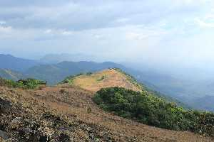
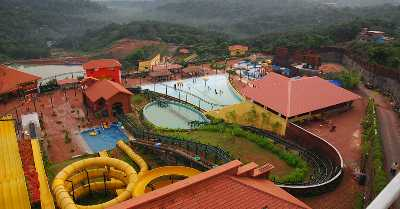

Payyabalam beach
The impeccably unspoiled Payyabalam beach is adorned with sparkling pearls of golden sand and foamy white waves of the Arabian Sea. The highlight of Kannur and one of the many beautiful beaches of Kerala, the Payyabalam beach has an incredibly peaceful and inviting aura. Unwind after a long week by relaxing at this remarkable seashore and find yourself mesmerized by its elegant beauty and contagious calm. The approach to the beach is through a small crossover bridge that is built over a narrow canal. To the right of the bridge are the memorials of Kannur's important political personalities that had passed away over the recent decades. Palm trees and casuarinas embellish the shores like an alluring garland in various shades of green. This pristine golden beach is not only great for relaxing and revitalizing yourself, but also for boating, swimming, and thrilling adventure activities! The rhythmic dance of the turquoise waters is so inviting that you are bound to be tempted to take a dip. Boating and indulging in some adventure sports will allow you to wade deeper into these alluring waters. The Payyamballam Beach spreads its reach for about 4 kms and is nothing short of paradise on earth.
Muzzhapilangad Drive-in Beach

The Muzzhapilangad Drive-in Beach at Kannur is one referred to with many superlatives- as the longest drive-in beach in the whole of India, as one of the cleanest beaches of Kannur and most importantly, as one of the best drive-in beaches that the entire Asian continent has to offer! Being Kerala's only drive-in beach, it attracts the attention of many tourists around the year. The whole concept of drive-in beaches is that you can drive right on the sandy shores of the beach- it is not very often that you get to drive along a 4 km long shoreline that offers an open road with no traffic and a stunning view. You can drive through the shallow end of the water giving your car a natural car wash as you roll down the windows to breathe in the cool wind that caresses in your face and you might never want to walk on a beach ever again. If you get tired of driving around the beach, which is very unlikely, you can wade in the beautiful turquoise waters for a swim. You can also stop for some refreshments - some of the most lip-smacking dishes of the Malabar cuisine. Treat the adrenaline junkie in you and go out for some paragliding, parasailing, powerboating and many other water sports. The Muzzhapilangad Drive-In Beach is the perfect weekend getaway to blow off some steam and spend quality time with your loved ones.
St. Angelos Fort

St Angelos Fort is definitely one of the most popular and frequently visited attractions of Kannur and for more reasons than one. The polished yet prehistoric structure of this fortress oozes with unadulterated elegance and overwhelming power. Standing ashore in the Arabian sea, St Angelos Fort enjoys a panoramic and unobstructed view of the diorama created by the merger of the magnetic waves and the azure waters. It also overlooks the mesmerising Mopilla Bay, a natural harbour. St Angelos Fort is mainly famous for the gripping history and the intriguing tales it has to tell. This fort was a point of interest for many dynasties of domestic as well as the international origin and has seen many bitter battles in the quest to conquer it. The Portuguese Viceroy, Dom Francisco de Almeida had imprisoned his successor, Alfonso de Albuquerque because he did not want to give up the reins of his power. This led to a series of bitter events and conspiracies that have been etched in the history of Portugal as well as Kannur forever. Walking around the walls of this majestic fort, you can almost picture the battles that this fortress has seen. There are tombstones of the soldiers who lost their lives fighting for the fort, barracks and an old chapel here that you can explore. Kannur's first ever lighthouse also stands next to the fort and adds to its already hypnotic glory.
Parassinikkadavu Snake Park

Parassinikkadavu Snake Park is regarded as one of the finest snake sanctuaries of Asia, the Parassinikadavu Snake Park is the pride of the south. It is one of the most prominent reptile preservation centres in the country and is the only one in Kerala. The Parassinikadavu Snake Park is home to over 150 different species of reptiles like crocodiles, monitor lizards and snakes- both venomous and non-venomous. Not only reptiles and amphibians, but this snake park also goes a long way to preserve and protect many wild mammals, marine creatures as well as rare avifauna- both endemic and migratory. The establishment of Parassinikadavu Snake Park was an initiative of the Visha Chikista Kendra, a medical institution that offers diagnosis and treatment of snakebites. The main motto behind establishing this park was to clarify undue superstitions about snakes, educate the common man about these species and create the right awareness among them. Each enclosure of the different species of animals has a brief description of their habitat, moods, peculiarities and interesting titbits that educate the visitors about these exotic and truly extraordinary species. Visiting this park is an absolute treat for the wildlife enthusiasts and animal lovers. You will be stunned by the unique and admirable traits of many of the park's inhabitants and will undoubtedly be left in awe of nature's wondrous creations.
Arakkal Museum

The Arakkal Museum in Kannur city is one of the most significant and frequently visited attractions of the south that celebrates the memory and grandeur of Kerala's only Muslim royal family- the Arakkal Ali Rajas. Previously a majestic palace of the royal family and their actual place of residence, this museum is a true testimony to the impeccable Muslim architecture and design. The Durbar Hall of this palace, which was once the official venue of gathering for the kings and their nobles, has now been converted into the Arakkal Kettu Museum and is managed by the Arakkal Family Trust. Many artefacts dating to the rule of the Arakkal Dynasty and various relics of the royals are put up on display at this museum. Entering the Arakkal Museum, you feel like you have been teleported to the 1600s- the entire palace oozes with sheer elegance and polished grace. The artefacts and heritage items of the Arakkal Dynasty have been maintained perfectly here and will never fail to stun you with their ostentatious grace and awe-striking class.
Palakkayam Thattu

Palakkayam Thattu is Tucked away in the verdant greenery of the Western Ghats and soaring at a dizzying altitude of 3500 feet above sea level, Palakayyam Thattu is one of the most beautiful hill stations in the entire state of Kerala. Adorned with luxuriously dense greenery, sky-touching trees and majestic hillocks, the view that Palakayyam Thattu enjoys is one that you will rarely find. Owing to its considerable altitude, this hill station is often visited by low hanging clouds that render the entire atmosphere misty and fresh! The magnificent view of this hillock has made it one of the most popular trekking destinations in the south. Sipping on a cup of tea as you overlook the lavish foliage from the top is truly an experience that you will cherish forever. The entire climb up to Palakayyam Thattu is one that is cradled in the serene laps of nature- tranquil, and untouched by the worries of the world. Visiting this gorgeous hill station and basking in its remarkable view with your loved ones would be a perfect way to escape the monotony of our fast-paced city lives and indulge in some excitement and enjoyment.
Madayipara

Madayipara is Perched upon a hillock near Pazhayagandi in the scenic city of Kannur, Madayipara is renowned as one of the most beautiful landscapes in the entire state of Kerala. Often compared with the famous Tulip Gardens of Amsterdam, Madayipara is better known as 'the land of flowers'. This mystical land is one that changes its appearance with the seasons. The springs decorate the entire hillock in a spectacular gown of vivaciously coloured flora. As the summer approaches, the hillock shapeshifts into a glamorous golden field filled with knee-high grass. Come autumn, the place is dotted with leaves that paint the field a raging crimson red. The monsoons lift up this hill station's spirits and decorate the whole 700 acres in striking shades of green. These stunning changes adapted by Madayipara have aroused the interest of countless tourists around the world who come here to witness this extraordinary phenomenon. Decorated with a luxuriant variety of 300 flowering plants and more than 30 species of thick grass, Madayipara is no less than a heaven for nature lovers. This rich ecology draws the attention of 150 different species of stunning butterflies that charm you with their mind-boggling designs and vivid colours, including the Atlas butterfly - the world's biggest butterfly. Over 100 species of birds, both endemic and migratory, call Madayipara their home and make this hill station a bird lover's paradise.
Paithalmala
Paithalmala is a small hill station tucked in the forest of Kodagu in the Kannur district of Kerala, Paithalmala is one of the most beautiful peaks in the Western Ghats that mesmerizes anyone who has been here. Standing tall at 4500 ft, Paithalmala is the tallest peak in the district of Kannur and a very popular trekking destination for all the nature and adventure lovers out there. An enchanting hill station with captivating beauty, thrilling trekking trails and abundance of lush greenery - Paithalmala is a perfect getaway. Trekking is the best activity one can indulge in here, allowing you to absorb and be mesmerized by the stunning beauty of the place and its surroundings. A 6 km long trek from the base to the top of the hill takes you through dense forests and grasslands, ultimately leading to a watch tower at the top. The watch tower is the highlight of the whole trek as one get to see breathtaking scenery of the Kodagu forests, Coorg Forests and the adjoining areas. Small detours to the nearby ponds or lakes located via the help of the local people can add to your experience of Paithalmala.
Parassinikkadavu

About 16 km away from Kannur, Parassinikkadavu is a town popular for its Muthappan Temple and Parassinikkadavu Snake Park. The Muthappan temple, dedicated to Sree Muthappan is the only Hindu temple in the state which witnesses a Theyyam performance daily as per ritual. The snake park on the other hand, is home to a huge number and variety of snakes including the King Cobra, Pit Viper and many more.
Aralam Wildlife Sanctuary

Being the northernmost wildlife reserve in the whole of Kerala and the only wildlife sanctuary in Kannur, the Aralam Wildlife Sanctuary is quite a big deal. Amidst these sky-touching trees and mesmerising greenery, many exotic wildlife species have marked their territory. Taking a safari through the thick verdure and venturing deeper into the forests, you will encounter many striking and remarkably extraordinary species of animals as well as birds that will leave you stumped and in awe of nature's wondrous creations. There are nature camps organised at the Aralam Wildlife Sanctuary that attempt to acquaint the people, especially students, to the wildlife and give them a chance to take a much-needed break from the city's blaring noise. The sanctuary also has a few trekking locations that have attracted the attention of many tourists for the past few years. The landscape of the Aralam Wildlife Sanctuary is an interesting one that ranges between a depth of only 50 metres above sea level to an altitude of 1145 metres in the skies at Katti Betta, its highest peak. Dotted with towering trees and dense foliage, this sanctuary is adorned with a beautiful mix of a diverse forestation- evergreen, semi-evergreen and moist deciduous.
Theyyam

Bringing life to intriguing myths and exciting legends, the Theyyam festival is one of the most eagerly awaited festivals of the vibrant city of Kannur. Drawing the attention of thousands of people every year from across the country, this festival is renowned as the most remarkable and riveting art form of Malabar, the northern part of Kerala. This joyous celebration includes performances of over four hundred different traditional folk dances and is celebrated to appease the many local deities, gods, goddesses and heroes of the gripping ancient legends. Performers are dressed in attractive traditional costumes, captivating headgear and alluring ornaments with colourful face paints and creative face masks on. It is usually celebrated in the premises of a local shrine or an open space with a temporarily built sanctuary called 'Pathi'. The concept of the festival is quite a different yet beautiful one - after performing the due rituals and chanting the right shlokas, the resident deity of the shrine temporarily manifests itself into the body of a worthy man, the performer, and enlightens him with a divine experience. The performer and the viewers immensely respect this dance and are dedicated to preserving its ritualistic heritage. Witnessing the alluring magic and irresistible charm of this festival in action is sure to make you fall in love with the rich and vibrant culture of South India and will definitely leave you yearning for more. Theyyam is celebrated at more than 100 locations across the entire state of Kerala, however, Kannur is one of the most popular and frequently visited destinations when it comes to witnessing the celebration of this auspicious and awaited festival.
Vismaya Water Park
Located near Taliparamba in Kannur in Kerala, Vismaya Water Park is a water themed park which is replete with a plethora of amusing rides and thrilling water sports. Spread across 30 acres of land area, the water park was inaugurated in August 2008, the water park boasts of a host of splash pools in addition to other facilities like a conference hall, prayer halls, restaurants and casual shops etc. The amazing decor complements the cosy infrastructure and adds to the overall ambiance of the park. Thronged by several tourists all around the year, the park is a common favourite among kids and adults alike. Managed and maintained by Malabar Tourism Development Co-operative Limited (MTDC), the park is one of its kind in the country to be promoted by a Co-operative society.